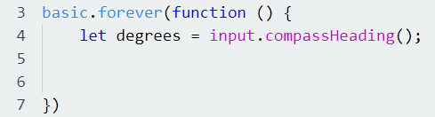
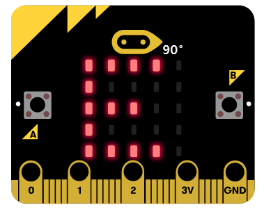

I denne oppgaven så skal vi bruke Micro:Bit til å lage et enkelt kompass. Her vil du ha bruk for Input og Basic bibliotekene i Micro:Bit, i tillegg til dette så vil dere også få bruk for Else, else if og else tilstandene. For at kompasset skal hele tiden oppdatere seg når vi bruker det, så vil dere også få nytte for å ta i bruk forever funksjonen som ligger i Basic delen i Micro:Bit. Husk også å bruke variabler for å definere input.compassHeading() funksjonen til Micro:Bit. Med andre ord, så kan det være fint å starte med å sette inn basic.forever funksjonen først, dermed definere variabelen "degrees" som input.compassHeading();. Videre under i beskrivelsen så skal vi forklare hvordan vi skal bestemme hvilke verdier som skal bestemme nord, øst, sør og vest. Vi ønsker derfor at dere skal starte med denne koden:
For å bestemme retningen for nord, så vil det være gunstig å sette tilstanden til å være degrees < 45 eller (bruk eller operatoren || her i tilstanden) degrees > 315. Får å bestemme øst så setter vi degrees til å være mindre enn 135. For å bestemme sør så setter vi at degrees skal være mindre enn 225. Hvis ingen av disse tilstandene stemmer, så skal kompasset peke mot vest. I Micro:Bit så ønsker vi at hver retning skal vises i LED-lysene, her kan dere da benytte dere av basic.showString funksjonen og bare første bokstav skal vises i lysene. For eksempel slik:
Her viser Micro:Bit retningen øst (på engelsk da east).
Da skal dere være klare for å lage et kompass i Micro:Bit. Lykke til!